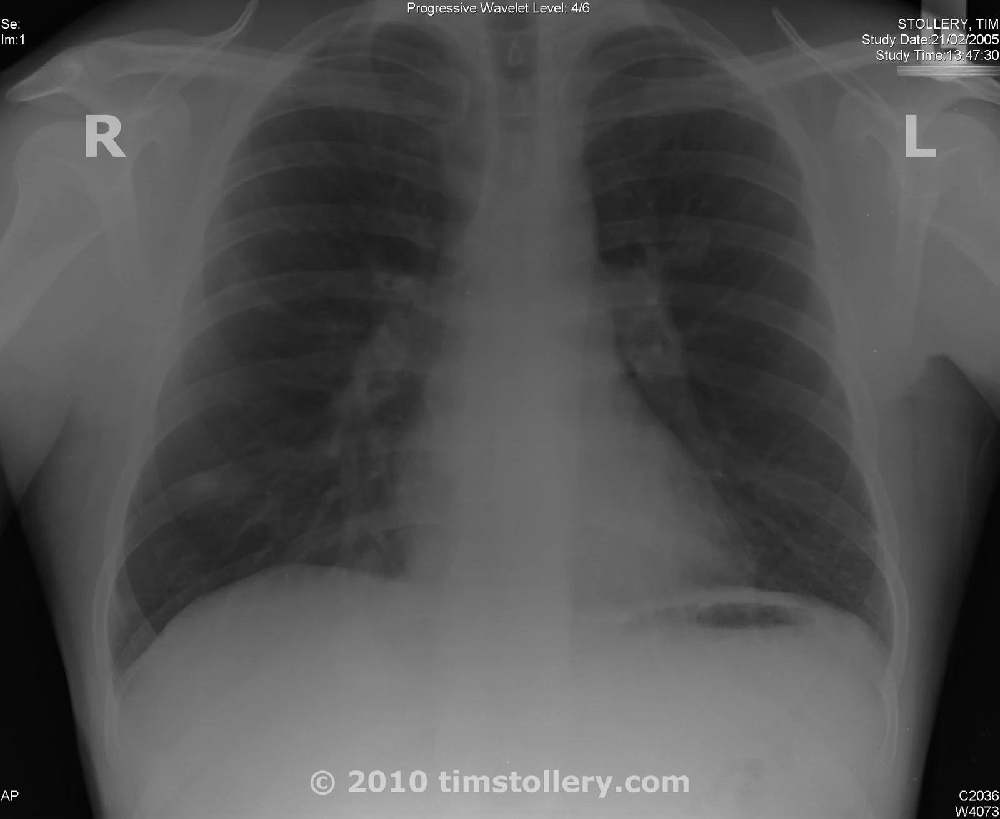

Záznam o mojej liečbe
Snímky a výsledky
Röntgenové snímky pred chemoterapiou a počas nej.
Štyri nasledujúce röntgenové snímky boli urobené pred chemoterapiou a počas nej. Neskoršie snímky boli čisté, až na drobné jazvy v miestach pôvodných metastáz (druhotných nádorov).


